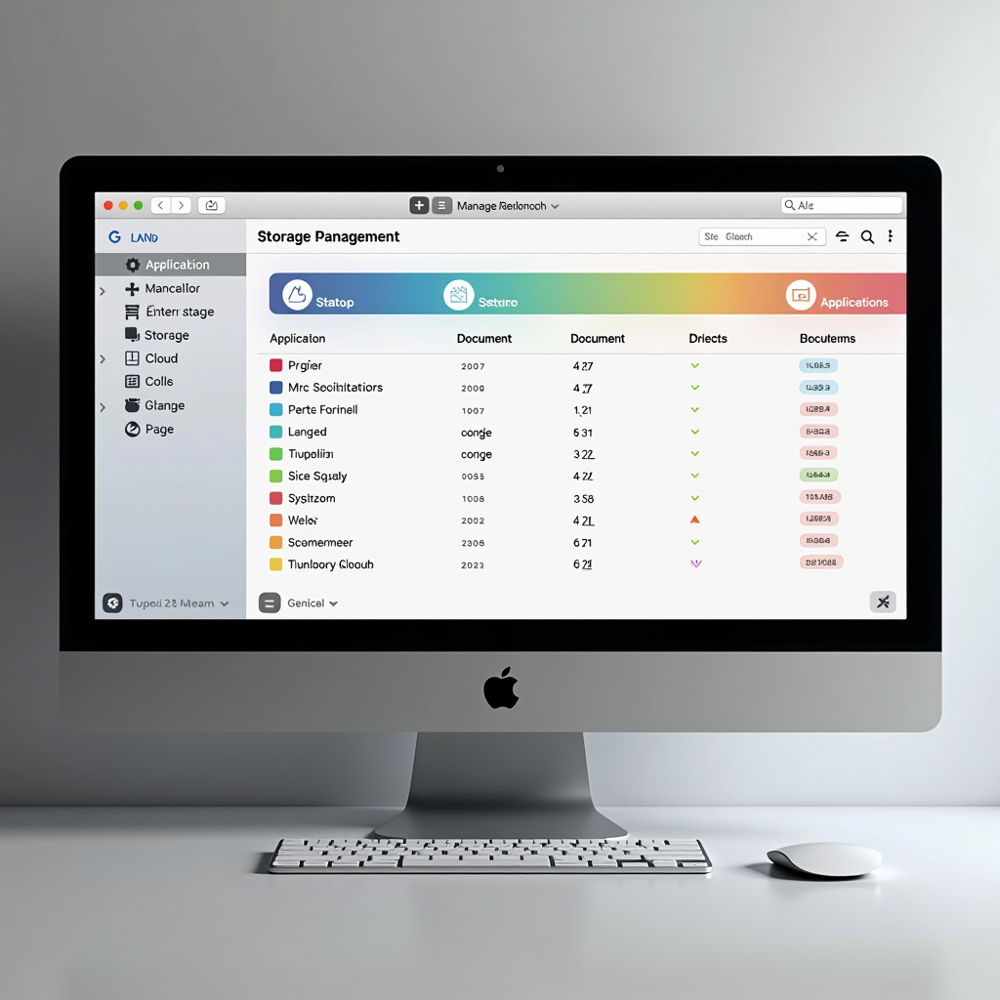

Mastering Mac Storage Management: A Complete Guide to Apple's Built-in Optimization Tools

Running out of disk space on your Mac can significantly impact performance and productivity. Fortunately, Apple has developed sophisticated built-in tools that make storage management straightforward and effective. This comprehensive guide will walk you through everything you need to know about optimizing your Mac's storage using native macOS features.
Whether you're dealing with a nearly full startup disk or simply want to maintain optimal performance, understanding Apple's storage management ecosystem is essential for every Mac user. These tools have evolved significantly over recent macOS versions, offering increasingly intelligent ways to reclaim space without sacrificing accessibility to your important files.
Understanding Mac Storage Management Tools
Apple's Storage Management system provides a centralized hub for monitoring and optimizing your Mac's disk space. To access these tools, click the Apple menu, select "About This Mac," then click "Storage" and finally "Manage." This opens a comprehensive dashboard that displays your storage breakdown across different categories including Applications, Documents, System files, and more.
The Storage Management interface uses color-coded bars to visualize how your disk space is allocated. Each category is represented by a distinct color, making it easy to identify which types of files are consuming the most space. This visual representation is particularly helpful when you need to quickly assess where storage optimization efforts should be focused.
Within the Storage Management window, you'll find several powerful recommendations tailored to your specific usage patterns. These suggestions are generated based on your actual file usage and can include options like storing files in iCloud, optimizing storage automatically, emptying the Trash automatically, and reducing clutter. Each recommendation comes with a detailed explanation of what it does and how much space it could potentially free up.
The sidebar in Storage Management provides quick access to different file categories. By clicking on Applications, Documents, or other categories, you can drill down into specific areas and see detailed lists of files sorted by size. This granular view makes it easy to identify large files that you may no longer need or that could be moved to external storage or cloud services.
Optimizing iCloud Integration for Maximum Efficiency
One of the most powerful features in Mac storage management is the seamless integration with iCloud. The "Store in iCloud" option allows you to keep your Desktop, Documents, Photos, and Messages in iCloud while maintaining local access to recently used files. This intelligent system automatically manages which files are stored locally and which are kept only in the cloud, based on your usage patterns and available disk space.
When you enable "Optimize Mac Storage" for iCloud, your Mac will automatically remove local copies of files you haven't accessed recently, keeping only lightweight placeholders that can be downloaded on demand. This happens transparently in the background, so you'll still see all your files in Finder as if they were stored locally. When you open a cloud-only file, macOS downloads it automatically, providing a seamless experience while maximizing available disk space.
For Photos, iCloud optimization is particularly effective. The "Optimize Mac Storage" option for Photos keeps full-resolution images and videos in iCloud while storing smaller, device-optimized versions locally. This can save enormous amounts of space if you have a large photo library, potentially freeing up hundreds of gigabytes while still allowing you to browse and view your entire collection. Full-resolution versions are downloaded automatically when you need to edit or share them.
It's important to note that iCloud optimization requires an active iCloud subscription with sufficient storage space. Apple offers various iCloud+ plans, and choosing the right tier depends on your total data volume. The investment in iCloud storage often pays for itself by eliminating the need for expensive local storage upgrades and providing the added benefits of automatic backups and cross-device synchronization.
Managing System Files and Cache Data
System files and cache data can accumulate significantly over time, sometimes consuming tens of gigabytes of valuable disk space. macOS creates various types of cache files to speed up operations, including browser caches, application caches, and system caches. While these files serve important purposes, they can often be safely cleared to reclaim space, as they will be regenerated as needed.
The Storage Management tool includes a "Reduce Clutter" feature that helps identify large files, downloads you may no longer need, and files you've accessed only once. This feature presents a comprehensive list of items sorted by size, making it easy to review and delete files that are no longer necessary. Pay particular attention to your Downloads folder, which often contains large installer files and documents that have already been moved to their permanent locations.
Another significant source of storage consumption is Time Machine local snapshots. When your backup drive isn't connected, macOS creates local snapshots to ensure you don't lose the ability to restore files. While this is a valuable safety feature, these snapshots can consume considerable space. The system automatically manages these snapshots, deleting older ones when space is needed, but you can also manually delete them through Terminal if necessary.
Application support files and logs can also accumulate over time. Many applications store preferences, caches, and temporary files in the Library folder. While you should be cautious about manually deleting these files, the Storage Management tool can help identify applications that are using excessive space for support files. In some cases, reinstalling an application can help clear out accumulated data that's no longer needed.
Implementing Automatic Storage Optimization
macOS offers several automatic optimization features that work continuously in the background to maintain healthy storage levels. The "Empty Trash Automatically" option removes items from the Trash that have been there for more than 30 days. This ensures that deleted files don't linger indefinitely, consuming space unnecessarily. This feature is particularly useful if you tend to forget about emptying the Trash manually.
The "Optimize Storage" recommendation works in conjunction with iCloud to automatically remove movies and TV shows you've already watched from Apple TV. Since these media files can be extremely large, often several gigabytes each, this automatic cleanup can free up substantial space over time. You can always re-download content from your purchase history if you want to watch it again.
For email users, the Mail application can consume significant storage with attachments and message data. The Storage Management tool can identify large email attachments and help you download them to a specific location or delete them from Mail while keeping the messages themselves. This is particularly useful for users who receive large files via email regularly and don't need to keep them in their mail database indefinitely.
Setting up these automatic features creates a self-maintaining storage system that requires minimal manual intervention. By enabling these options, you establish a foundation for long-term storage health, reducing the likelihood of encountering "disk full" warnings and maintaining optimal Mac performance without constant manual cleanup efforts.
Best Practices for Long-term Storage Health
Maintaining healthy storage habits goes beyond using Apple's built-in tools. Regular audits of your file system can help prevent storage issues before they become critical. Schedule monthly reviews of your largest folders and files, questioning whether you still need each item. Consider implementing a personal file organization system that includes regular archiving of older projects and documents to external storage or cloud services.
Be mindful of application installations and updates. Some applications, particularly creative software and development tools, can consume enormous amounts of space. Regularly review your Applications folder and remove programs you no longer use. Additionally, be aware that application updates sometimes leave behind old versions or installation files that can be safely deleted after the update is complete.
Consider using external storage solutions for large media libraries, project archives, and backup files. Modern external SSDs offer fast performance and large capacities at reasonable prices. By moving infrequently accessed files to external storage, you can keep your internal drive focused on active projects and system files, which helps maintain optimal performance and reduces the frequency of storage management tasks.
Finally, maintain at least 10-15% of your total disk space as free space. macOS performs best when it has adequate room for virtual memory, temporary files, and system operations. If your disk regularly approaches full capacity, consider upgrading to a larger internal drive or being more aggressive about moving files to external or cloud storage. This buffer space is essential for smooth system operation and can prevent performance degradation that occurs when a Mac's boot drive becomes too full.
Key Takeaways
- Access Storage Management through Apple menu → About This Mac → Storage → Manage for comprehensive disk space analysis
- Enable iCloud optimization to automatically manage local storage while maintaining access to all your files
- Use automatic features like Empty Trash Automatically and Optimize Storage for hands-free maintenance
- Regularly review and clean up large files, downloads, and application caches using the Reduce Clutter feature
- Maintain at least 10-15% free space on your boot drive for optimal Mac performance
- Implement a regular storage audit schedule and consider external storage for large media libraries
Conclusion
Effective storage management is crucial for maintaining a fast and responsive Mac. Apple's built-in Storage Management tools provide a comprehensive, user-friendly solution that addresses most storage challenges without requiring third-party software. By understanding and utilizing these features, you can ensure your Mac operates at peak performance while avoiding the frustration of running out of disk space.
The combination of intelligent iCloud integration, automatic optimization features, and powerful manual management tools gives Mac users everything they need to maintain healthy storage levels. Whether you're working with a Mac that has limited internal storage or simply want to keep your system running smoothly, these strategies will help you make the most of your available disk space.
Remember that storage management is an ongoing process, not a one-time task. By establishing good habits, enabling automatic features, and performing regular reviews of your file system, you can prevent storage issues before they impact your productivity. Your Mac will thank you with faster performance, quicker boot times, and a more responsive overall experience.